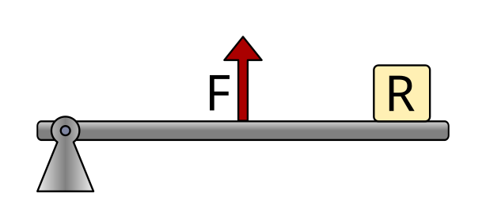

Palancas¶
La palanca es una máquina simple formada por una barra rígida que gira alrededor de un punto fijo llamado fulcro o punto de apoyo.
Las palancas permiten multiplicar fuerzas o aumentar desplazamientos aplicando el principio del equilibrio de momentos.
Índice de contenidos:
Aplicaciones¶
Las palancas se pueden utilizar para realizar varias funciones:
- Transmitir una fuerza o un movimiento desde un punto a otro. Es el caso de unas tijeras, que transmiten la fuerza y el movimiento desde unos dedales adaptados a la mano hasta las hojas de corte.
- Aumentar la fuerza ejercida. Es el caso de un cascanueces o unos alicates.
- Aumentar el desplazamiento aplicado. Es el caso de un remo o de una caña de pescar.
Dependiendo de la situación relativa de la fuerza aplicada (F), de la resistencia o carga (R) y el fulcro (△), distinguimos tres tipos de palancas.
Palancas de primer grado¶
En las palancas de primer grado el fulcro está situado entre la fuerza aplicada y la resistencia.
En este tipo de palanca, según las distancias, se puede ganar fuerza o ganar desplazamiento.

Ejemplos de este tipo de palanca son un balancín, unas tijeras o unos alicates.

Palancas de segundo grado¶
En las palancas de segundo grado la resistencia se encuentra entre el fulcro y la fuerza aplicada.
El fulcro se encuentra en un extremo de la barra.
Este tipo de palanca siempre multiplica la fuerza, es decir, se necesita aplicar una fuerza menor que la resistencia.

Ejemplos de este tipo de palanca son una carretilla, un cascanueces o un sacacorchos.

Palancas de tercer grado¶
En las palancas de tercer grado la fuerza aplicada se situa entre el fulcro y la resistencia.
El fulcro está situado en un extremo de la barra.
Este tipo de palanca no multiplica la fuerza, pero permite obtener mayor desplazamiento y mayor velocidad en el extremo.
{kind=link}

Ejemplos de este tipo de palanca son unas pinzas de depilar, nuestro antebrazo cuando sube la mano o una caña de pescar.

Cálculo de fuerzas y distancias¶
Para que una palanca esté en equilibrio, los momentos de giro (o torques) respecto al punto de apoyo deben ser iguales.
El momento de giro es el producto de una fuerza por su distancia al fulcro.

La expresión matemática es la siguiente:
Donde:
F1 = Fuerza aplicada 1
d1 = Distancia desde la fuerza 1 hasta el punto de apoyo
F2 = Resistencia o fuerza 2
d2 = Distancia desde la fuerza 2 hasta el punto de apoyo
Las distancias pueden medirse en metros, centímetros, milímetros, pulgadas, etc. Pero ambas distancias deben estar siempre en la misma unidad al hacer los cálculos.
Las fuerzas pueden medirse en kilogramos-fuerza (kgf) o en Newton (N), pero deben expresarse en la misma unidad en ambos lados de la ecuación.
Ejercicio alicates¶
Como ejemplo, vamos a calcular la fuerza que realizan unos alicates a los que aplicamos una fuerza de 10 kgf en el mango, con las siguientes distancias:

El primer paso será escribir los datos del problema y traducir los valores de distancia a la misma unidad, por ejemplo, a milímetros.
A continuación escribimos la fórmula y sustituimos los valores conocidos:

Por último, despejamos la ecuación y calculamos el valor de la incógnita con las mismas unidades que tenía la fuerza conocida:

Ejercicio carretilla¶
En este ejercicio vamos a calcular la fuerza que hay que realizar para levantar una carretilla que lleva en su interior un peso de 40 kgf. Las dimensiones de la carretilla simplificada son las siguientes:

El primer paso será escribir los datos del problema. En este caso no es necesario convertir las unidades de distancia, pues ambas distancias están dadas en centímetros.
Como podemos ver, para calcular la distancia desde la fuerza 1 hasta el punto de apoyo es necesario sumar las dos distancias que aparecen en el dibujo.
A continuación escribimos la fórmula y sustituimos los valores conocidos:

Por último despejamos la ecuación y calculamos el valor de la incógnita (F1) con las mismas unidades que tenía la fuerza conocida, kilogramo-fuerza:
Ejercicios de palancas¶
Preguntas de tipos de palancas:
Un martillo se utiliza como palanca de primer grado para sacar un clavo. Se aplica una fuerza de 12 kgf en el extremo del mango. La distancia desde el punto de apoyo hasta la fuerza aplicada es de 30 cm, y la distancia desde el punto de apoyo hasta el clavo es de 30 mm. ¿Cuál es la fuerza que actúa sobre el clavo?
Unas tijeras funcionan como una palanca de primer grado. Se aplica una fuerza de 8 kgf en cada mango. La distancia desde el eje hasta el punto donde se aplica la fuerza es de 9 cm, y la distancia desde el eje hasta el punto de corte es de 3 cm. ¿Qué fuerza se ejerce en el punto de corte?
Una barra se utiliza como palanca de primer grado para levantar una piedra de 120 kgf de peso. La distancia desde el punto de apoyo hasta la piedra es de 40 cm, y la distancia desde el punto de apoyo hasta donde se aplica la fuerza es de 160 cm. ¿Qué fuerza hay que aplicar para levantar la piedra?
Un cascanueces puede modelarse como una palanca de segundo grado. La nuez ejerce una resistencia de 15 kgf. La distancia desde el punto de apoyo hasta la nuez es de 4 cm, y la distancia desde el punto de apoyo hasta donde se aplica la fuerza es de 20 cm. ¿Qué fuerza hay que aplicar para romper la nuez?
Un abridor de botellas actúa como una palanca de segundo grado. La fuerza necesaria para levantar la chapa es de 25 kgf. La distancia desde el punto de apoyo hasta la chapa es de 2 cm, y la distancia desde el punto de apoyo hasta la fuerza aplicada es de 10 cm. ¿Cuánta fuerza debemos aplicar?
Una prensa manual para poner corchos en botellas funciona como una palanca de segundo grado. La prensa tiene las siguientes dimensiones:
- La distancia desde el punto de apoyo hasta el corcho (carga) es de 5 cm.
- La distancia desde el corcho hasta el punto donde el operario aplica la fuerza es de 50 cm.
Si el operario aplica una fuerza de 11 kgf en el mango de la prensa, ¿cuál es la fuerza que ejerce la prensa sobre el corcho?
Unas pinzas funcionan como una palanca de tercer grado. Se aplica una fuerza de 6 kgf con los dedos. La distancia desde el punto de apoyo hasta donde se aplica la fuerza es de 40 mm, y la distancia desde el punto de apoyo hasta el extremo de las pinzas es de 80 mm. ¿Qué fuerza se ejerce en el extremo de las pinzas?
El antebrazo puede modelarse como una palanca de tercer grado. El bíceps aplica una fuerza de 300 kgf. La distancia desde el codo hasta el punto donde actúa el bíceps es de 50mm, y la distancia desde el codo hasta la mano es de 35 cm. ¿Con qué fuerza se puede levantar la mano?
Una caña de pescar funciona como una palanca de tercer grado. El pescador aplica una fuerza de 20 kgf con la mano tirando de la caña. La distancia desde el punto de apoyo (extremo de abajo de la caña, apoyado en el suelo) hasta el punto donde se aplica la fuerza es de 50 cm, y la longitud total de la caña es de 200 cm. ¿Cuál es la fuerza que ejerce el pez sobre la caña?
Unidad imprimible¶
Unidad en formato imprimible, con preguntas.